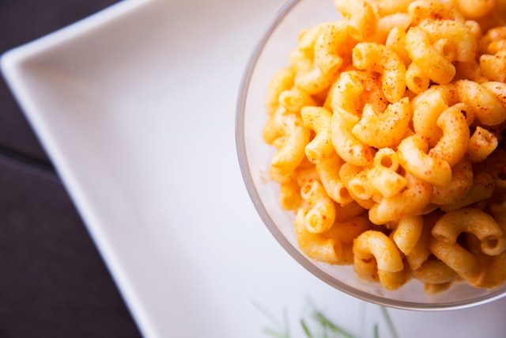

Cooking up some HTML
This is a practice space for The Odin Project's Foundations course.
About
Roxane's Gluten-Free Mac and Cheese

Ingredients
- Gluten-Free Casarecce Pasta
- Milk
- Butter
- Gluten-Free All-Purpose Flour
- Smoked Paprika
- Vintage Red Leicester, grated
- Minced garlic
Preparation
- Boil the pasta according to instructions on the pack.
- Melt the butter in a saucepan.
- Add garlic and cook at low heat for about a minute.
- Add the flour and form a roux. Let it cook for a few minutes.
- Add the milk little by little, whisking often to avoid lumps.
- Add the smoked paprika and stir well.
- Add the shredded cheese and stir until creamy and smooth.
- Tip the drained pasta into the sauce and stir well. Serve immediately.